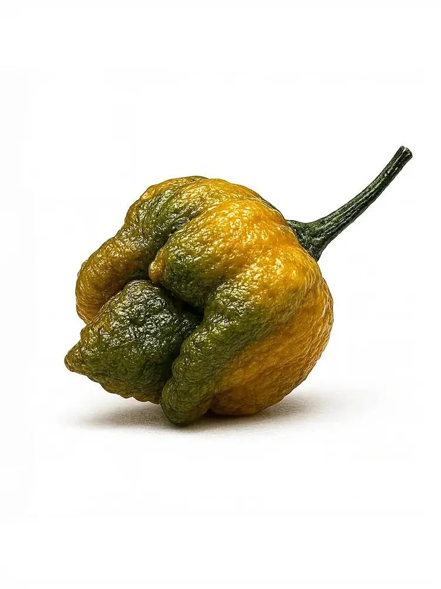

The Trinidad Moruga Scorpion is a rare, sought after pepper that was discovered to be native to Moruga in Trinidad and Tobago. It was created in 2010 and has a heat level of 2,009,231 SHU.
The Carolina Reaper was once the world's hottest known pepper. It has since been outdone by only one other pepper, but still remains the second hottest pepper. With a heat level of 2,200,000 SHU, it is roughly 200 times hotter than a jalapeno pepper.
Pepper X was officially recognized by Guinness World Records in 2023 as the hottest pepper in the world. With a heat level of 2,693,000 SHU, it far outclasses all other peppers for the time being. The pepper is extremely exclusive, with its seeds not being available for the general public to purchase.
